โครงการพัฒนาคุณภาพการพยาบาล (CQI)
หมอนกางขาป้องกันข้อสะโพกเทียมเคลื่อนหลุด
หลังผ่าตัดเปลี่ยนข้อสะโพกเทียม
หลักสูตรเฉพาะทางการพยาบาลปริศัลยกรรมออร์โธปิดิกส์ ประจำปีการศึกษา 2569
หน่วยผ่าตัดออร์โธปิดิคส์ โรงพยาบาลศิริราช
02 · ผู้รับผิดชอบโครงการ
| ชื่อ–สกุล | รหัสนักศึกษา |
|---|---|
| นางสาวกนกวรรณ บวรพิพัฒนชัย | 6911801 |
| นายกิตติวัฒน์ ผัดอาจ | 6911803 |
| นางสาวสินีพิชญ์ ทองฉิม | 6911833 |
| นางสาวสุธาพร สำราญมาก | 6911836 |
| นายอดิศักดิ์ ศักดิ์มาก | 6911842 |
| นางสาวอรพิน รุ่งเรือง | 6911844 |
★
ที่ปรึกษาโครงการ
พว.อัญชลี ศรีสุข
หลักสูตรเฉพาะทางการพยาบาลปริศัลยกรรม ประจำปีการศึกษา 2569
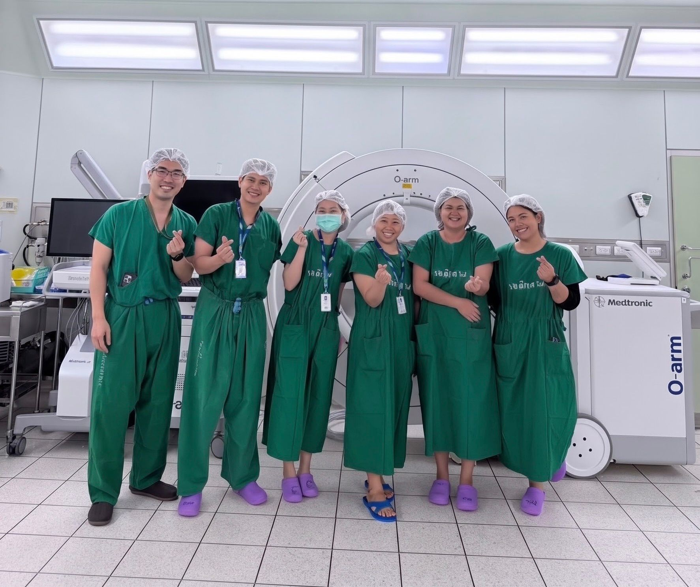
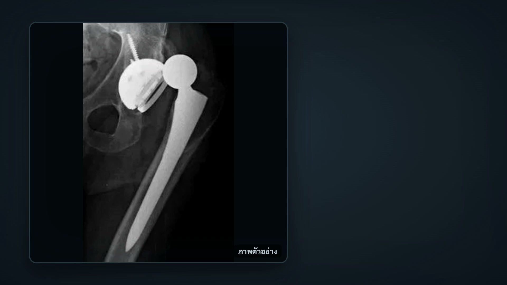
03 · ที่มาของโครงการ
2–4%
อุบัติการณ์ข้อสะโพกเทียม
เคลื่อนหลุดหลังผ่าตัด
Korfitsen et al., 2023
223 · 176 · 188
รายที่ผ่าตัดเปลี่ยนข้อสะโพกเทียม
ปี 2566 · 2567 · 2568
หน่วยผ่าตัดออร์โธปิดิคส์ ศิริราช, 2569
ทุกราย
ผ่าตัดแบบ posterior approach
เสี่ยงข้อหลุดสูงกว่าวิธีอื่น
Dimentberg et al., 2023
03 · ที่มาของโครงการ
ที่มา: วรภักดิ์สกุล สุขดี, 2565
03 · ที่มาของโครงการ
04 · วัตถุประสงค์
1
เพื่อพัฒนาหมอนกางขา ที่สามารถช่วยรองขา ล็อกขา และผิวสัมผัสนุ่มสำหรับผู้ป่วยหลังได้รับการผ่าตัดเปลี่ยนข้อสะโพกเทียม
2
3
เพื่อศึกษาความพึงพอใจของบุคลากรต่อการใช้งานHip B(Lock) Ultra Smoothในการดูแลผู้ป่วยหลังผ่าตัดเปลี่ยนข้อสะโพกเทียม
เพื่อป้องกันอุบัติการณ์ข้อสะโพกเทียมเคลื่อนหลุดขณะเคลื่อนย้ายหรือพลิกตะแคงตัวผู้ป่วยหลังผ่าตัดเปลี่ยนข้อสะโพกเทียม
05 · แนวคิดและทฤษฎี
1
ทฤษฎีการจัดท่าเพื่อป้องกันข้อสะโพกเทียมเคลื่อนหลุด
Hip Positioning and Dislocation Prevention
2
ทฤษฎีการยกอวัยวะส่วนปลายสูงเพื่อลดอาการบวม
Elevation Therapy
3
ทฤษฎีความมั่นคงและการรองรับอวัยวะ
Stability and Support Theory
4
ทฤษฎีแรงเสียดทานและแรงเฉือน
Friction and Shear Force
1 · Hip Positioning and Dislocation Prevention
ข้อสะโพกเป็นข้อต่อแบบ ball and socket หลังผ่าตัด THA ด้วย posterior approach เนื้อเยื่อรอบข้อยังอยู่ในระยะฟื้นตัว จึงเสี่ยงต่อข้อเคลื่อนหลุด
ท่าที่ต้องหลีกเลี่ยง
รองรับขาทั้งสองข้าง ประคองแนวขาและสะโพก ลดการหุบขา ปรับตำแหน่งตามข้อจำกัดของผู้ป่วยแต่ละราย
2 · Elevation Therapy
ภายหลังผ่าตัดอาจบวมจากการตอบสนองต่อการอักเสบ หลอดเลือดฝอยซึมผ่านมากขึ้น และสารน้ำคั่งในช่องว่างระหว่างเซลล์ การยกขาสูงอย่างเหมาะสมช่วย
Hip B(lock) Ultra Smooth ออกแบบให้สามารถรองรับขา ล็อกขาให้อยู่กับที่และสามารถยกปลายเท้าสูงได้ เพื่อไม่ทำให้ข้อสะโพกเสี่ยงต่อการเลื่อนหลุด และเพิ่มการไหลเวียนเลือดดำกลับสู่หัวใจ
3 · Stability and Support Theory
ข้อสะโพกต้องมั่นคง โดยเฉพาะขณะ
การเคลื่อนไหวที่ไม่สัมพันธ์กันของลำตัวและขา ทำให้เกิดแรงบิดต่อข้อสะโพก ข้อจึงไม่มั่นคงและมีโอกาสเลื่อนหลุด
Chan และคณะ (2025) เป็น scoping review เกี่ยวกับข้อควรระวังหลังผ่าตัด THA มีการสนับสนุนการใช้อุปกรณ์ประคองขาในการเคลื่อนย้ายผู้ป่วยจากเตียงผ่าตัด เป็นช่วงที่ควรให้ความสำคัญแนวขาเป็นพิเศษ
ออกแบบ Hip B(lock) Ultra Smooth ให้มีฐานรองรับมั่นคง มีพื้นที่รองรับขาเหมาะสม และสามารถช่วยประคองขาไม่ให้เคลื่อนออกจากตำแหน่งขณะเคลื่อนย้ายผู้ป่วย จะช่วยเพิ่มความความปลอดภัยและลดการเคลื่อนไหวไม่พึงประสงค์
4 · Friction and Shear Force
การเสียดสีระหว่างผิวหนังกับพื้นผิวรองรับขณะเคลื่อนย้าย ทำให้เกิด
ส่งผลให้เกิดผิวหนังระคายเคือง ความไม่สุขสบาย และเพิ่มความเสี่ยงต่อการบาดเจ็บเนื้อเยื่อ
Schwartz และคณะ (2018): พบว่า ความชื้นทำให้ค่าสัมประสิทธิ์แรงเสียดทานเพิ่มขึ้น อาจเพิ่มแรงเฉือนต่อผิวหนังและเนื้อเยื่อชั้นลึก
หุ้มด้วยผ้าซาตินผิวเรียบลื่น ลดแรงต้านขณะเคลื่อนย้ายขาและจัดท่า ลดการเสียดสีบริเวณผิวหนัง
06 · ทรัพยากรที่ใช้
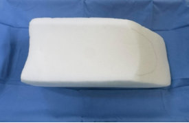
ฟองน้ำความหนาแน่นสูง
ผ้าซาติน
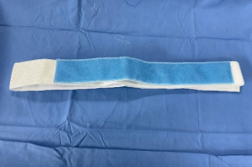
เทปหนามเตย
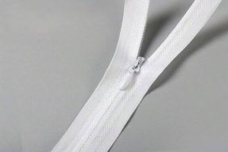
ซิป
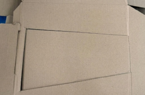
กระดาษลัง
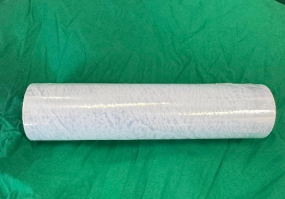
ฟิล์มยืดถนอมอาหาร
06 · ทรัพยากรที่ใช้
06 · ทรัพยากรที่ใช้
ให้ความรู้สึกสงบ สดชื่น มีชีวิตชีวา
ช่วยฟื้นฟูพลังงานในร่างกาย บรรเทาความเครียด และสร้างความรู้สึกร่มเย็นเป็นสุข
ช่วยปรับสมดุลสายตา ทำให้ดวงตาผ่อนคลาย ลดความพร่ามัวและเมื่อยล้าของดวงตา
06 · งบประมาณที่ใช้
| รายการ | ราคา |
|---|---|
| 1. ฟองน้ำความหนาแน่นสูง (high-density foam) | 400 บาท |
| 2. ผ้าซาติน เมตรละ 40 บาท × 3 เมตร | 120 บาท |
| 3. เทปหนามเตย (จาก Star sleeve) | ฟรี |
| 4. ซิป | 66 บาท |
| 5. กระดาษลัง (จากกล่องพัสดุในหน่วยงาน) | ฟรี |
| 6. ฟิล์มยืดถนอมอาหาร | 27 บาท |
| รวม | 613 บาท |
613
บาท ต่อชุด
ได้วัสดุฟรี 2 รายการ
07 · ขั้นตอนการดำเนินงาน
วางแผน
จัดประชุมกลุ่มและวางแผนการดำเนินโครงการ
1
ขั้นตอนที่ 2
ทบทวนปัญหา
ทบทวนอุบัติการณ์ข้อสะโพกเทียมเคลื่อนหลุด (dislocation) หลังผ่าตัดในช่วง 3 ปี (2566–2568)
2
ขั้นตอนที่ 3
ออกแบบนวัตกรรม
ออกแบบ Hip B(Lock) Ultra Smooth และพัฒนาอย่างต่อเนื่องด้วยวงจร PDCA 3 รอบ
3
ขั้นตอนที่ 1
07 · ระยะเวลาการดำเนินการ
ทดลองใช้ในหน่วยผ่าตัดออร์โธปิดิคส์ โรงพยาบาลศิริราช
12–15 ต.ค.
19–22 ต.ค.
26–30 ต.ค.
2–6 พ.ย.
9–11 พ.ย.
1
เขียนโครงการและวางแผนงาน
2
ประชุมมอบหมายงาน
3
จัดเตรียมวัสดุที่ใช้
4
ดำเนินงาน
5
ทดลองใช้และปรับปรุงแก้ไข
6
สรุปและประเมินผลงาน
07 · ขั้นตอนการดำเนินงาน
รอบที่ 1 ค้นหาปัญหาและพัฒนาต้นแบบ
รอบที่ 2 ทดลองใช้และปรับปรุงประสิทธิภาพ
รอบที่ 3 พัฒนาอย่างต่อเนื่อง
P
Plan
วางแผน
D
Do
ดำเนินการ
C
Check
ตรวจสอบ
A
Act
ปรับปรุง
CQI
3 รอบ
07 · PDCA รอบที่ 1
P
Plan
วางแผน
D
Do
ดำเนินการ
C
Check
ตรวจสอบ
A
Act
ปรับปรุง
07 · PDCA รอบที่ 2
P
Plan
วางแผน
D
Do
ดำเนินการ
C
Check
ตรวจสอบ
A
Act
ปรับปรุง
07 · PDCA รอบที่ 3
P
Plan
วางแผน
D
Do
ดำเนินการ
C
Check
ตรวจสอบ
ขณะเคลื่อนย้ายไม่เกิด ข้อสะโพกเคลื่อนหลุด
A
Act
ปรับปรุง
07 · ขั้นตอนการประดิษฐ์ · รอบที่ 1
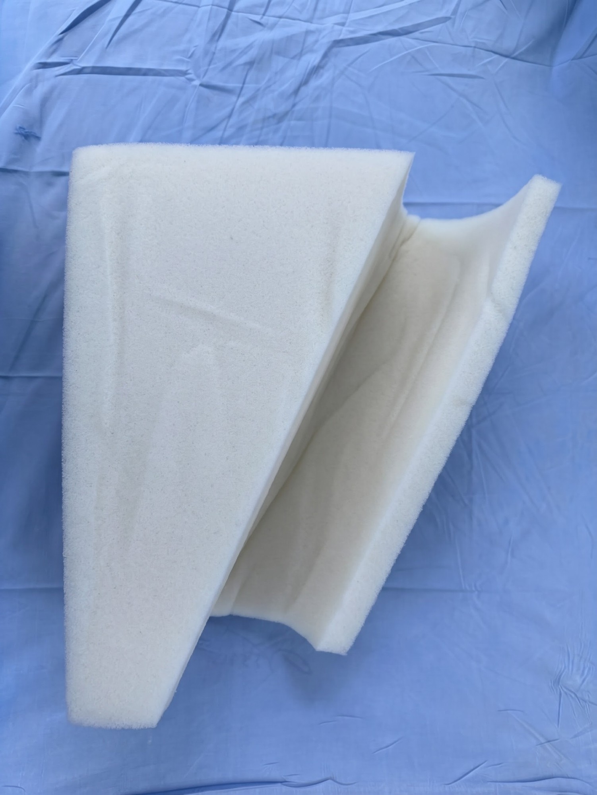
ต้นแบบ V1
นำฟองน้ำลักษณะนุ่มมาออกแบบ
▲
รูปสามเหลี่ยม
เพื่อให้กางขา
U
รูปตัว U
รองรับขา
!
ฟองน้ำนุ่ม ทำให้ยุบตัวเมื่อใช้งาน
!
ไม่สามารถประคองขาได้
!
ไม่สามารถใช้ได้ทั้งสองข้าง
07 · ขั้นตอนการประดิษฐ์ · รอบที่ 2
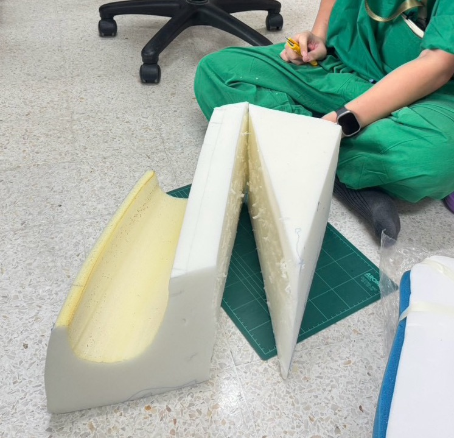
1
ตัดฟองน้ำความหนาแน่นสูงเป็นหมอนกางขาทรงสี่เหลี่ยมคางหมู ให้ขากางได้ 30 องศา
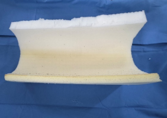
2
ตัดบล็อคล็อคขารูปตัว U ร่องเว้าตามรูปขา เอียงขึ้น 45 องศา ทางปลายเท้าให้ส้นเท้าลอย
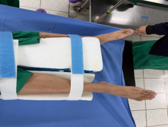
3
ทดลองจัดท่า ตรวจสอบให้ขาอยู่ในบล็อค ขาสามารถกางได้ ส้นเท้าลอย แล้วปรับขนาดให้พอดี
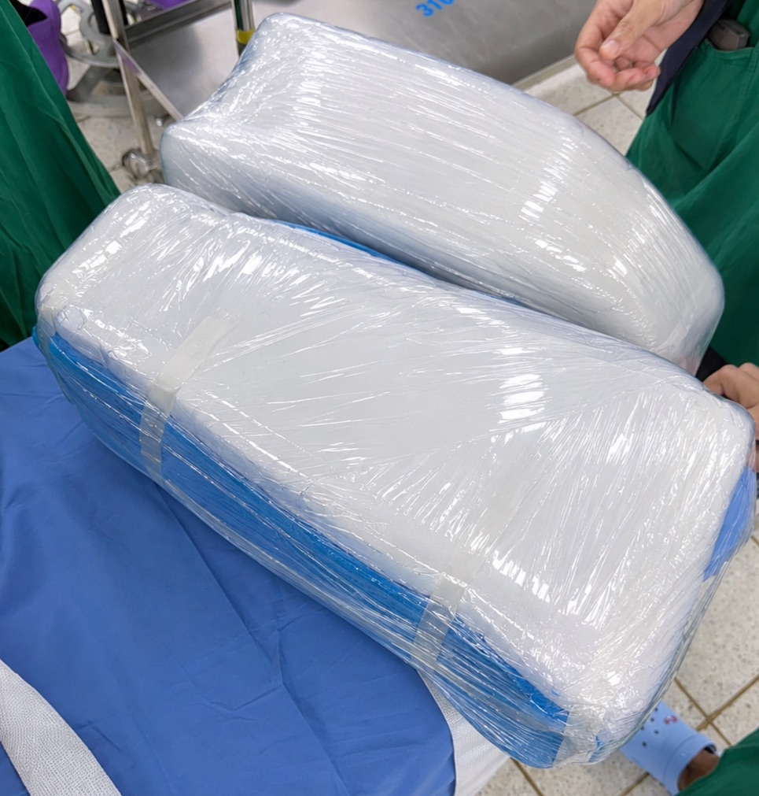
4
หุ้มฟองน้ำความหนาแน่นสูงด้วยแผ่นฟิล์มเพื่อกันน้ำและให้ใช้งานได้นานขึ้น
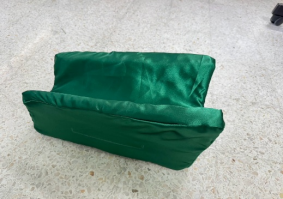
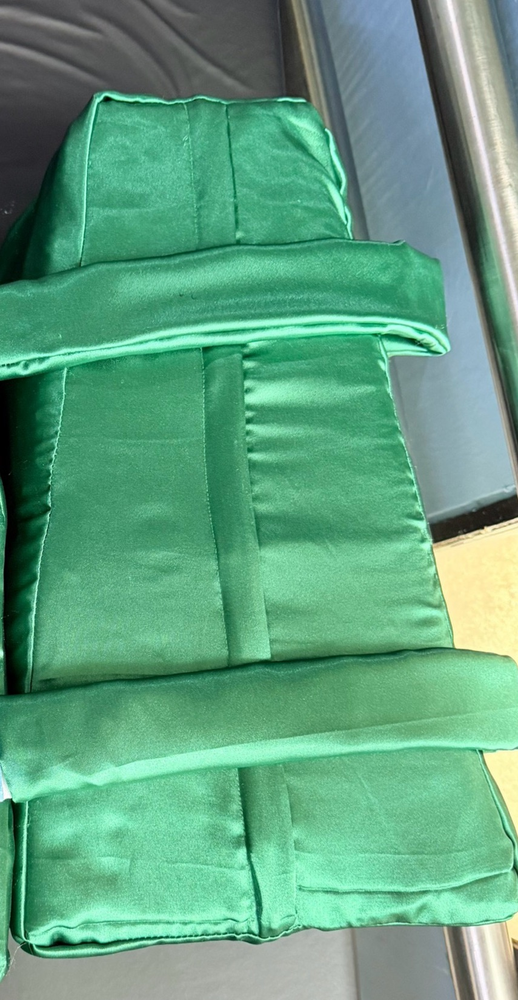
5
เย็บปลอกผ้าหุ้มหมอนทั้งสองชิ้น ด้วยผ้าซาติน มีซิปด้านบน ถอดซักและเช็ดทำความสะอาดได้
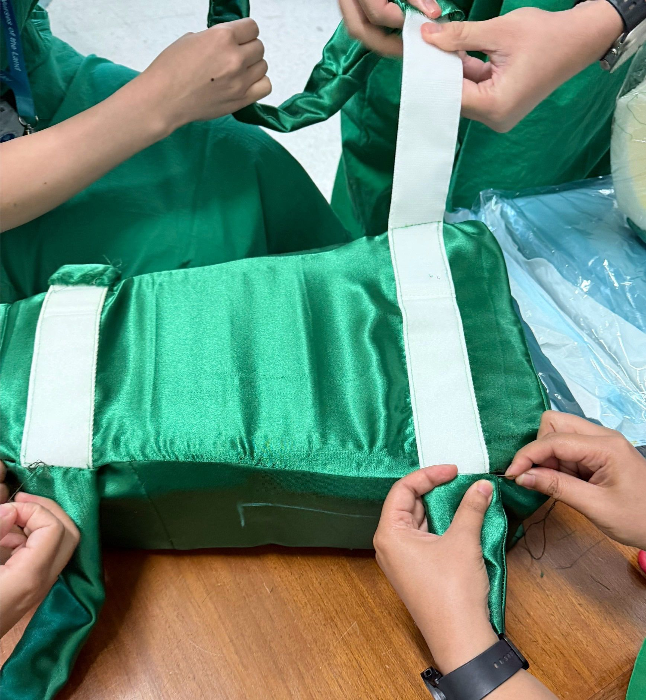
6
เย็บเทปหนามเตยยึดสองชิ้นเข้าด้วยกัน สลับใช้ได้ทั้งขาซ้ายและขวา
เย็บสายรัดที่หมอนกางขา
07 · ขั้นตอนการประดิษฐ์
โมเดล 3 มิติ
ของจริง
หมอนกางขา
ทรงสี่เหลี่ยมคางหมู
A 16 · B 28 · C 48 ·
สูง 15 ซม.
ทำมุมให้กางขาได้ 30°
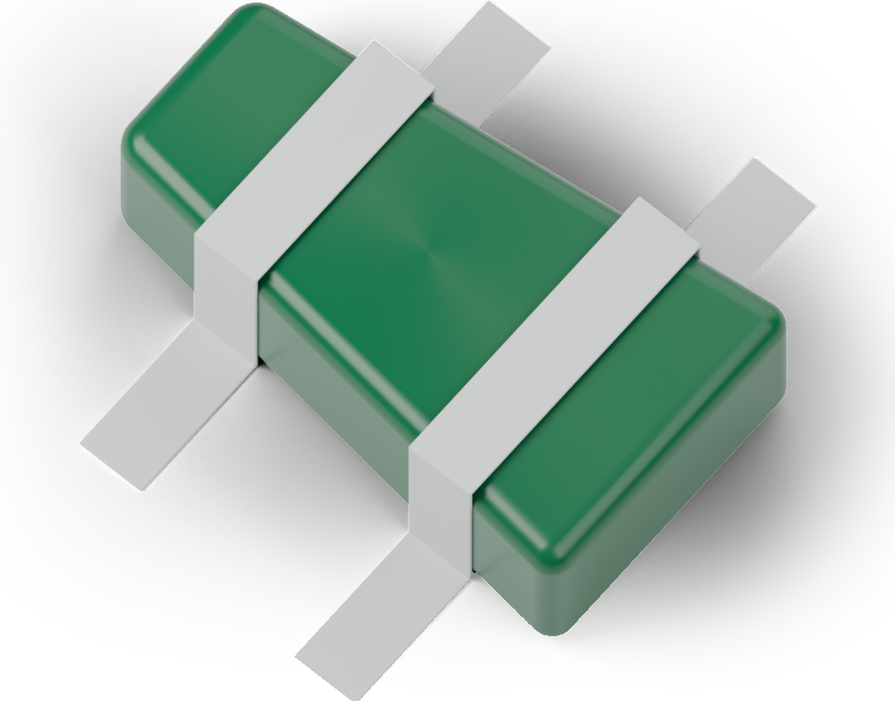
A 16
B 28
C 48
สูง 15
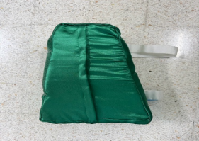
บล็อคล็อคขา
รูปตัว U
ทำร่องเว้าตามรูปขา
เอียงขึ้นทางปลายเท้า ให้ส้นเท้าลอย
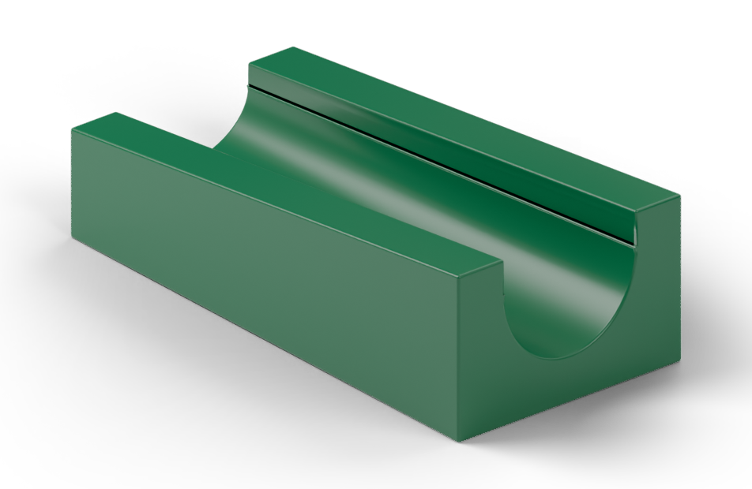
07 · ผลงาน
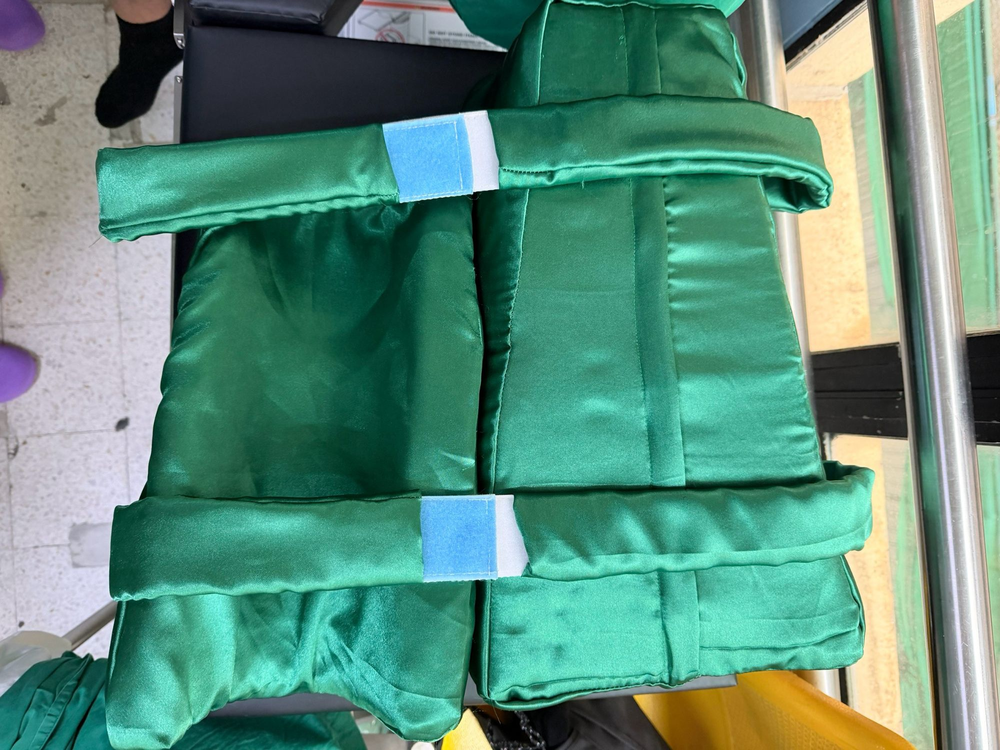
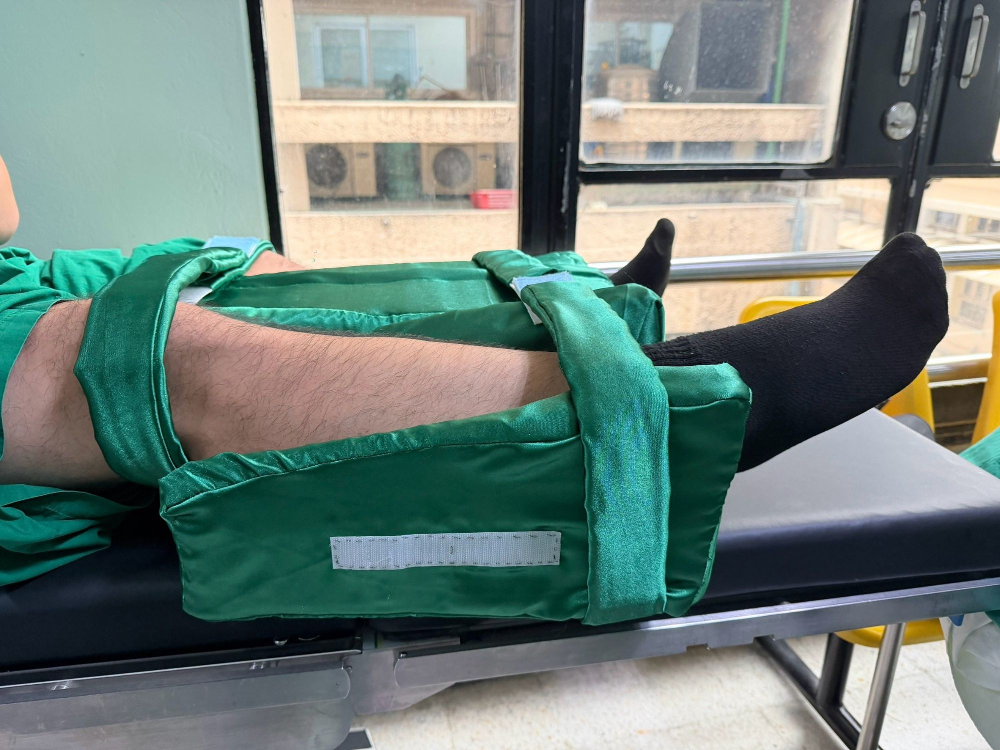
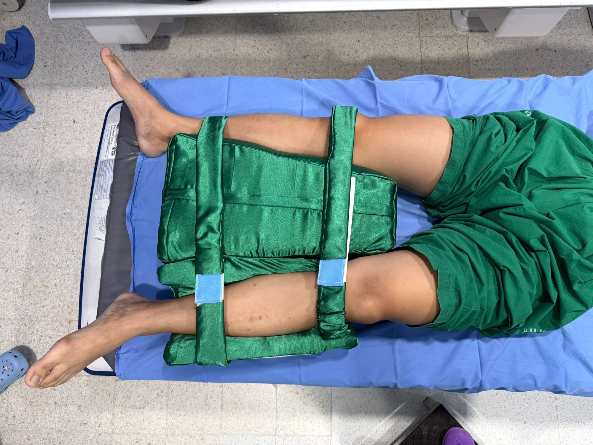
หมอน 2 ชิ้น พร้อมสายรัดขา
มุมข้าง : ส้นเท้าลอยพ้นเตียง
มุมบน : จัดท่าจริงบนเตียง
07 · ขั้นตอนการใช้งาน
1
จัดผู้ป่วยนอนหงายราบ วางหมอนระหว่างขา ด้านแคบ อยู่ฝั่งต้นขา
ด้านกว้าง อยู่ฝั่งปลายเท้า ให้ขาข้างที่ผ่าตัดกาง 30 องศา
2
ประกบบล็อคล็อคขาติดกับหมอนกางขา
วางขาข้างผ่าตัดบนบล็อคล็อคขา หนุนตั้งแต่ใต้ข้อพับเข่าจนถึงน่อง
หัวเข่าและปลายเท้าตั้งตรง
3
ล็อกแนวขาให้คงที่โดยใช้สายรัดขา รัดขาอีกข้างกับหมอน
หลีกเลี่ยงการหมุนขาข้างที่ผ่าตัดเข้าด้านใน
4
ตรวจสอบหลังการจัดท่า
5
เมื่อใช้เสร็จ ปลดสายรัด ตรวจสอบผิวหนัง ถอดปลอกหุ้ม เช็ดทำความสะอาดก่อนใช้กับผู้ป่วยรายต่อไป
ขาข้างที่ผ่าตัด
กางออก 30 องศา
ข้อพับใต้เข่าไม่ถูกกด
และส้นเท้าลอย
สายรัดไม่กด
หรือแน่นเกินไป
เข่าและปลายเท้า
ตั้งตรงขึ้นด้านบน
07 · ขั้นตอนการใช้งาน
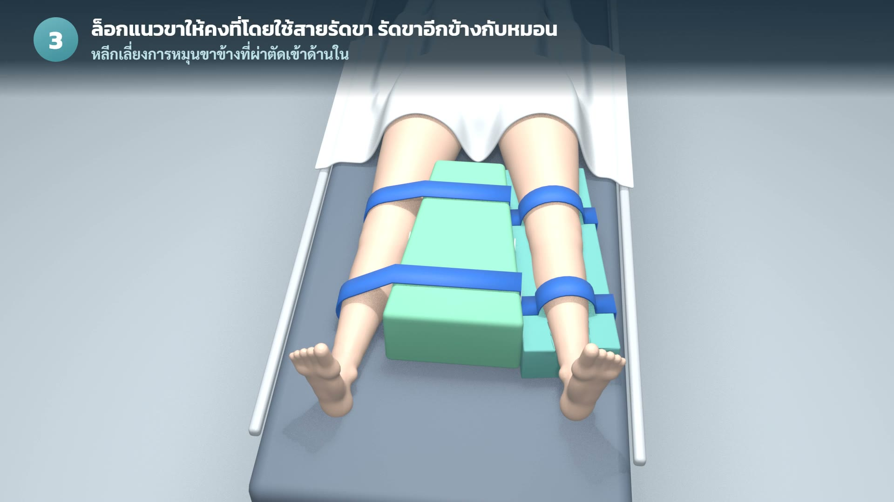
07 · ผลการใช้งาน
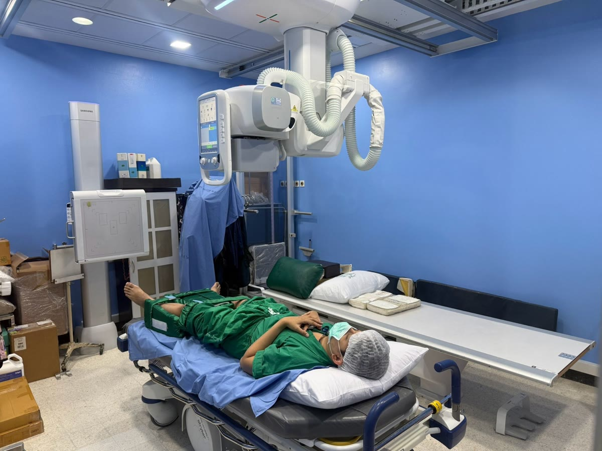
1
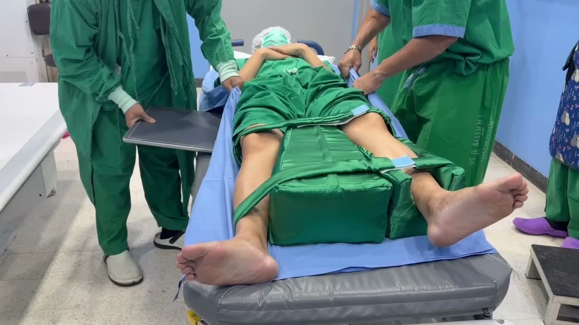
2
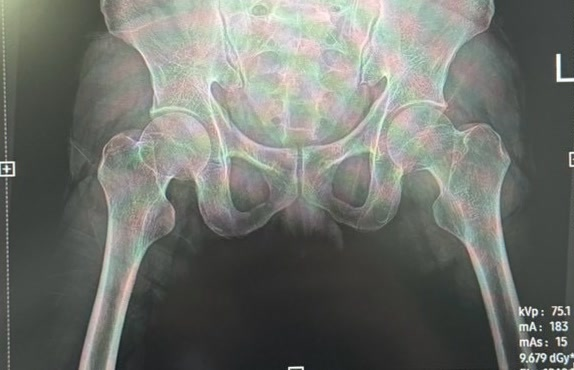
3
08 · ตัวชี้วัดผลสำเร็จ
ตัวชี้วัด
เป้าหมาย
ผลลัพธ์
1. อุบัติการณ์เกิดแผลกดทับระดับ 1 ขึ้นไปหลังใช้งานนวัตกรรม
0 ครั้ง
✓ ผ่าน
0 ครั้ง
2. อุบัติการณ์เกิดข้อสะโพกหลุดขณะเคลื่อนย้าย/พลิกตะแคง
0 ครั้ง
✓ ผ่าน
0 ครั้ง
3. อัตราการถ่ายภาพรังสีหลังผ่าตัดได้โดยไม่ใช้อุปกรณ์จัดท่าพิเศษ
100%
✓ ผ่าน
100%
4. ความพึงพอใจของบุคลากร
≥ ร้อยละ 85
✓ ผ่าน
ร้อยละ 87.1
✓
ผ่านเกณฑ์ครบทั้ง 4 ตัวชี้วัด
ผู้ป่วยหลังผ่าตัดเปลี่ยนข้อสะโพกเทียมที่ใช้ Hip B(Lock) Ultra Smooth
08 · ผลการประเมินความพึงพอใจ
87.1%
รายการประเมิน
ค่าเฉลี่ย
ร้อยละ
แปลผล
1. ด้านการออกแบบและวัสดุ
1.1 ขนาดและรูปทรงเหมาะสมกับสรีระผู้ป่วย
4.3
86
มากที่สุด
1.2 วัสดุแข็งแรง คงรูป ไม่ยุบตัวขณะรองรับน้ำหนักขา
4.0
80
มาก
1.3 ปลอกผ้าซาตินนุ่มลื่น ไม่ระคายเคืองผิวผู้ป่วย
4.5
90
มากที่สุด
2. ด้านประสิทธิภาพในการดูแลและความปลอดภัยของผู้ป่วย
2.1 ประคองขาและล็อกองศาการกางขาได้มั่นคง ลดความเสี่ยงข้อสะโพกหลุด
4.3
86
มากที่สุด
2.2 บล็อคล็อคขายกปลายเท้าสูง ส้นเท้าลอยพ้นเตียง ลดความเสี่ยงแผลกดทับ
4.4
88
มากที่สุด
2.3 สายรัดตีนตุ๊กแกกระชับ มั่นคงขณะเคลื่อนย้าย ไม่รัดแน่นจนกดทับผิวหนัง
4.3
86
มากที่สุด
3. ด้านความสะดวกในการปฏิบัติงานของบุคลากร
3.1 สลับใช้งานได้ทั้งขาซ้ายและขวาอย่างคล่องตัว
4.6
92
มากที่สุด
3.2 ถ่ายภาพรังสี x-ray หลังผ่าตัดได้ทันทีโดยไม่ต้องใช้อุปกรณ์จัดท่าเพิ่ม
4.4
88
มากที่สุด
3.3 จัดท่าผู้ป่วยได้ง่าย สะดวก และประหยัดเวลาในการปฏิบัติงาน
4.4
88
มากที่สุด
ความพึงพอใจโดยรวม
ระดับมากที่สุด
(เกณฑ์ ≥ 85%)
ผู้ตอบแบบประเมิน
พยาบาล
50%
ผู้ช่วยพยาบาล
30%
นักรังสีทางการแพทย์
20%
09 · แผนพัฒนาต่อ
ใช้หมอนต่อเนื่องจากห้องผ่าตัด ไปยังห้องพักฟื้นและหอผู้ป่วย
ห้องผ่าตัด
›
ห้องพักฟื้น
›
หอผู้ป่วย
1
สแกน QR Code
›
ดูขั้นตอน
›
วางหมอนถูกด้าน
2
10 · สรุปผล
ไม่เกิดอุบัติการณ์แผลกดทับระดับ 1 ขึ้นไป หมอนยกส้นเท้าให้ลอย หุ้มผ้าซาตินลดแรงเสียดทานและแรงเฉือน
ไม่เกิดอุบัติการณ์ข้อสะโพกเทียมเคลื่อนหลุดขณะเคลื่อนย้ายหรือพลิกตะแคง หมอนล็อกองศาการกางขาได้มั่นคง
ถ่ายภาพรังสีหลังผ่าตัดได้ทุกราย 100%
ไม่ต้องใช้อุปกรณ์จัดท่าเพิ่ม
ร้อยละ 87.1 สูงกว่าเป้าหมาย เด่นเรื่องจัดท่าสะดวก สลับใช้ได้ทั้งซ้ายและขวา และคุ้มค่าการใช้งาน
ผ่านเกณฑ์ ครบ 4 ด้าน
ต้นทุนเพียง
613 บาท
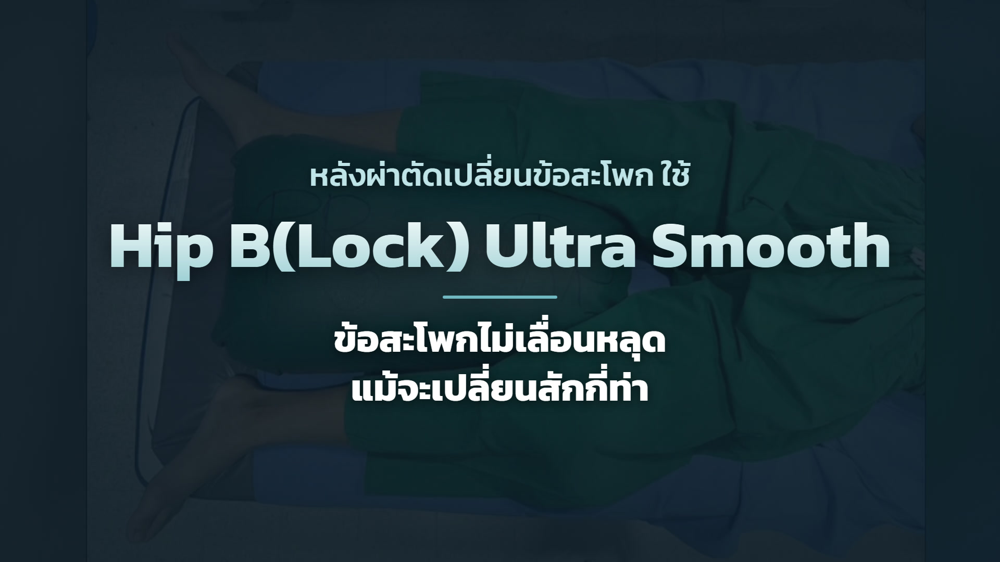
Hip B(Lock) Ultra Smooth
หน่วยผ่าตัดออร์โธปิดิคส์ โรงพยาบาลศิริราช